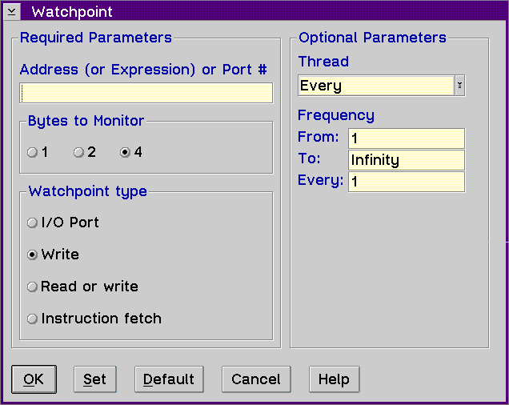

Displays the Watchpoint window, which allows you to set a watchpoint to stop the execution of your program when contents of memory at a given address are referenced, when an instruction is fetched from a particular address, or when an I/O port at a particular address is referenced.

Use the Watchpoint window to set a watchpoint.
Type a hexadecimal address or port or an expression that can be evaluated to a hexadecimal address.
Note: If you type ABC in the Address (or Expression) or Port # entry field, and there is a variable named ABC, the value of the variable is used instead of the hex value ABC. Also, you can type &a in the Address (or Expression) or Port # entry field to set the watchpoint on the address of a variable a.
For example, type the following in the Address (or Expression) or Port # entry field to set a watchpoint for the address A1FCC.
A1FCC
Type the following in the Address (or Expression) or Port # entry field to set a watchpoint for the expression &variable.
&variable
The debugger will monitor 1, 2, or 4 bytes for the type of watchpoint operation
that you select. This choice is made for you on the Instruction fetch
and I/O Port types.
The debugger supports four types of watchpoints. They are as follows:
Warning: If you set a watchpoint that is on the call stack, you should remove the watchpoint before leaving the routine associated with the watchpoint. Otherwise, when you return from the routine, the routine's stack frame will be removed from the stack leaving the watchpoint intact. Any other routine that gets loaded on the stack will then contain the watchpoint. You can set up to four watchpoints.
For a description of the types of data you can enter in the entry fields under the Optional Parameters group heading, refer to Set line....